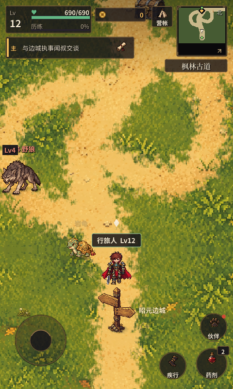
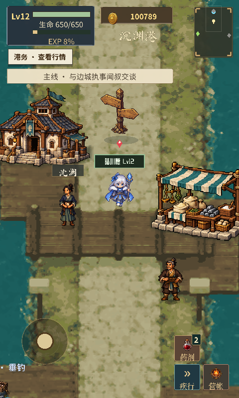

<!doctype html><html lang="zh-CN"><meta charset="utf-8"><meta name="viewport" content="width=device-width,initial-scale=1"><title>远征 · 地图与NPC美术输入</title><style>body{background:#17141a;color:#f3e8d0;font:16px/1.6 system-ui;margin:24px}main{max-width:1040px;margin:auto}.images{display:flex;flex-wrap:wrap;gap:20px}figure{margin:0 0 20px}img{display:block;max-width:100%;background:#28232b}figcaption{margin-bottom:8px;color:#bfb096}details{width:100%}a{color:#f0b95a}</style><main><h1>远征 · 地图与NPC风格指导</h1><p>必读4图；下方可选参考按需展开。当前图沿用已有实际运行截图，本轮没有运行游戏或生成图片。</p><p><a href="PROMPT_CLOUD_WORLD_ART.md">Cloud首轮提示词</a> · <a href="00_README.md">使用说明</a></p><div class="images"><figure><figcaption>当前 · 昭元边城</figcaption></figure><figure><figcaption>当前 · 枫林古道</figcaption></figure><figure><figcaption>NPC源帧条 · 执事</figcaption></figure><figure><figcaption>NPC源帧条 · 巡界人</figcaption></figure><details><summary>可选旧图 · 港口，HUD非当前版</summary><figure><figcaption>可选旧图 · 港口，HUD非当前版</figcaption></figure></details><details><summary>可选 · 铁匠</summary><figure><figcaption>可选 · 铁匠</figcaption></figure></details><details><summary>可选 · 孩童</summary><figure><figcaption>可选 · 孩童</figcaption></figure></details></div></main></html>